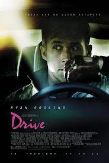

- Spirited Away
- ex MACHINA
- Drive
| Animation | Sci-fi | Suspense |
|---|---|---|
|  | ||
|
|
|
An animated movie or cartoon, is made up of a series of slightly different drawings of people, animals, and objects that make them appear to move. For more animated movies (click here).
Science fiction (or sci-fi) is a film genre that uses speculative, fictional science-based depictions of phenomena that are not fully accepted by mainstream science, such as extraterrestrial lifeforms, spacecraft, robots, cyborgs, dinosaurs, mutants, interstellar travel, time travel, or other technologies.For best science fiction movies (click here).
The essential aspects in a suspense film are the film viewer's emotions, worries, forthcoming adrenaline rush and spiraling menace. The aim of the suspense filmmakers is to make the film audience to think whether or not the lead character be successful in his target endeavor. For best supense movies (click here).